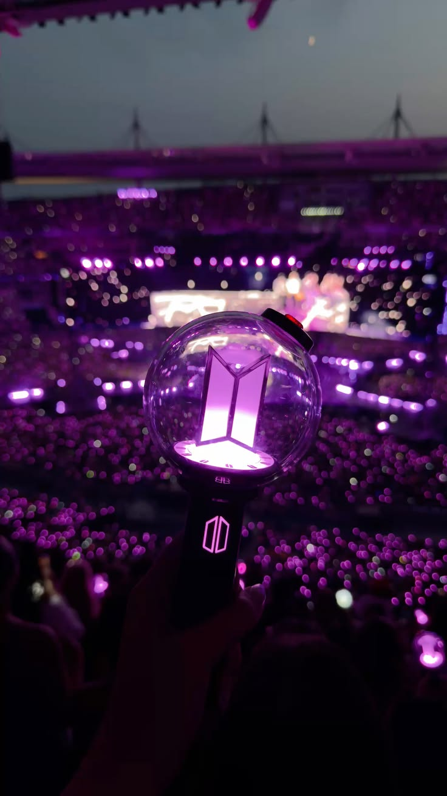
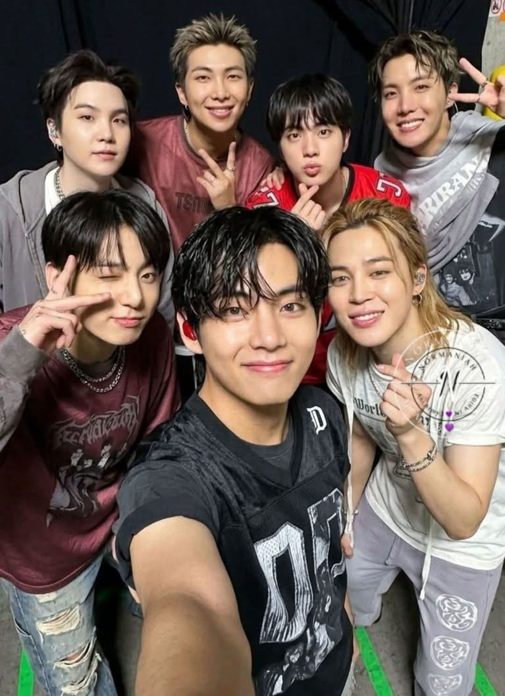
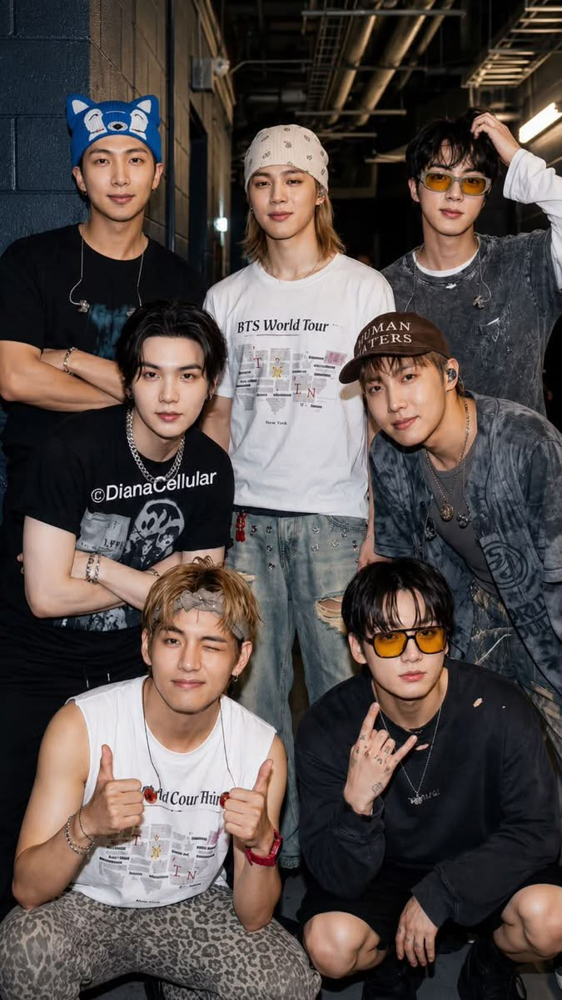
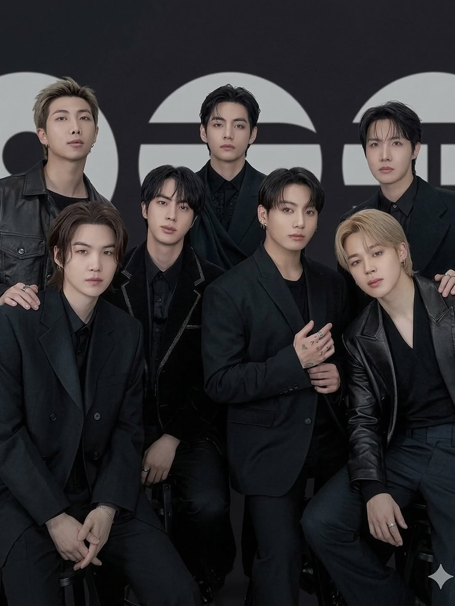

A História do BTS
history_edu Uma trajetória de Seul para o mundoO BTS, também conhecido como Bangtan Sonyeondan (방탄소년단), é um grupo sul-coreano formado pela BIGHIT MUSIC. O grupo realizou sua estreia em 13 de junho de 2013 e é composto por sete integrantes: Kim Namjoon (RM), Kim Seokjin (Jin), Min Yoongi (SUGA), Jung Hoseok (j-hope), Park Jimin (Jimin), Kim Taehyung (V) e Jeon Jungkook (Jung Kook).
Desde o início de sua carreira, o BTS desenvolveu uma identidade musical marcada pela participação dos próprios integrantes em diferentes processos criativos, incluindo composição e produção. Ao longo dos primeiros anos, o grupo construiu seu espaço na indústria musical sul-coreana e passou gradualmente a conquistar um público cada vez maior.
Projetos como The Most Beautiful Moment in Life, lançados entre 2015 e 2016, e o álbum WINGS, de 2016, contribuíram para o desenvolvimento de diferentes fases da identidade artística do grupo. Em 2017, a série Love Yourself marcou outro momento importante da trajetória do BTS e acompanhou sua crescente projeção internacional.
Com o passar dos anos, o BTS ampliou sua presença no cenário musical mundial, alcançando posições de destaque em importantes paradas e participando de grandes eventos internacionais. O grupo também realizou apresentações em diferentes países e recebeu reconhecimento em importantes premiações da indústria musical.
Além da música, a trajetória do BTS também é marcada por projetos e iniciativas relacionadas a temas sociais. Entre eles está a campanha LOVE MYSELF, realizada em parceria com a UNICEF, além de participações em discursos e eventos voltados para questões relacionadas à juventude, autoestima e desenvolvimento pessoal.
A relação entre o BTS e seu fandom também ocupa um lugar importante nessa história. Os fãs do grupo são conhecidos como ARMY, uma comunidade internacional que acompanha sua música, projetos e apresentações. Ao longo dos anos, essa conexão cresceu junto com o grupo e se tornou uma das características mais marcantes de sua trajetória.
Atualmente, a história do BTS é formada por diferentes eras, trabalhos musicais e momentos que contribuíram para sua identidade artística. A trajetória dos sete integrantes representa uma carreira marcada pela música, pela participação criativa e pela forte conexão estabelecida com fãs ao redor do mundo.
groups Conheça os membros
Os sete integrantes que formam o BTS.
RM
Líder e rapper do grupo. Conhecido por sua liderança, inteligência e composição.
Jin
Vocalista conhecido por sua voz, personalidade divertida e presença de palco.
SUGA
Rapper, produtor e compositor conhecido por seu trabalho musical e criatividade.
j-hope
Rapper e dançarino conhecido por sua energia, dança e presença contagiante.
Jimin
Vocalista e dançarino conhecido por suas performances e estilo marcante.
V
Vocalista conhecido por seu timbre característico, atuação e personalidade artística.
Jung Kook
Vocalista conhecido por suas habilidades musicais, performances e versatilidade.
music_note BTS | News
"ARIRANG" se torna o álbum do BTS com maior permanência na parada oficial do Reino Unido
O álbum alcançou 21 semanas na Official Albums Chart, superando a marca anterior do grupo.
BTS fará participação especial no American Music Awards 2026
O grupo foi anunciado para uma participação no evento, realizado em Las Vegas.
V compartilha mensagem com os fãs no Weverse
Em uma publicação recente, V conversou com o ARMY e compartilhou momentos de sua rotina e uma mensagem de carinho para os fãs.
BTS WORLD TOUR "ARIRANG" chega a Los Angeles
O Weverse divulgou informações sobre as apresentações da turnê em Los Angeles, incluindo as datas das transmissões online dos shows.
BTS celebra 13 anos de história ao lado do ARMY
O Weverse Magazine destaca a trajetória do grupo e a história construída durante anos entre os sete integrantes e seus fãs.
BTS é confirmado no iHeartRadio Music Festival 2026
O grupo foi anunciado como atração do primeiro dia do festival, realizado em setembro de 2026.
photo_library BTS & ARMY
Alguns momentos que representam a história do BTS e a conexão com o ARMY.
|
 |
Uma luz que conectaO ARMY é o fandom do BTS e está presente em diferentes partes do mundo. As luzes roxas representam a energia dos fãs reunidos para celebrar a música do grupo. |
 |
Sete integrantesRM, Jin, SUGA, j-hope, Jimin, V e Jung Kook formam o BTS. Cada integrante possui sua própria personalidade, talento e trajetória dentro do grupo. |
Momentos compartilhadosAo longo dos anos, os integrantes construíram uma trajetória marcada por músicas, apresentações, entrevistas e muitos momentos compartilhados. |
 |
Uma história mundialA música do BTS ultrapassou fronteiras e alcançou fãs de diferentes países. O grupo se tornou uma referência mundial do K-pop. |
 |
event Agenda
Acompanhe alguns dos principais eventos relacionados ao BTS.
BTS WORLD TOUR "ARIRANG"
Shows e apresentações da turnê mundial.
American Music Awards
Participação especial do BTS no evento musical.
iHeartRadio Music Festival
Apresentação do BTS no festival de música.
BTS & ARMY
Uma história construída através da música, dos sonhos e da conexão com os fãs.
Bangtan Sonyeondan
Sete integrantes, milhares de músicas e milhões de pessoas compartilhando essa história.